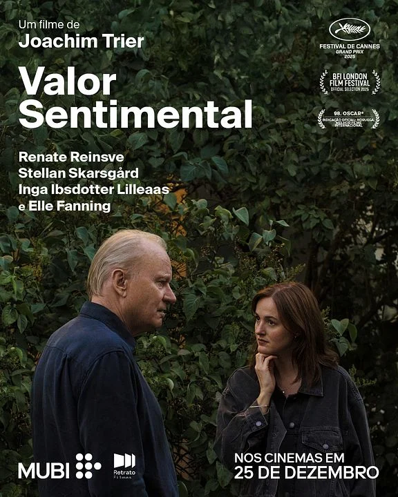
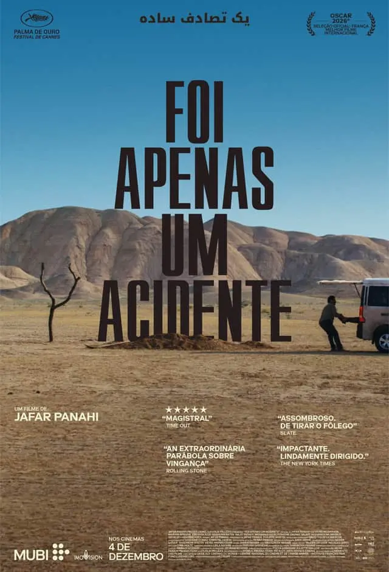
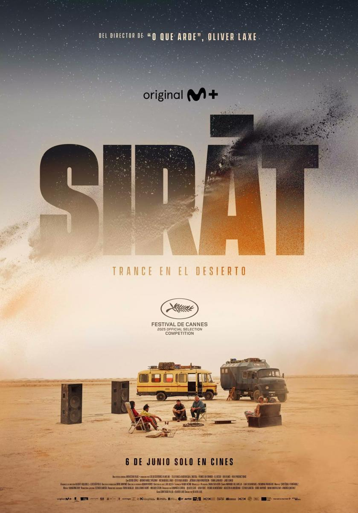
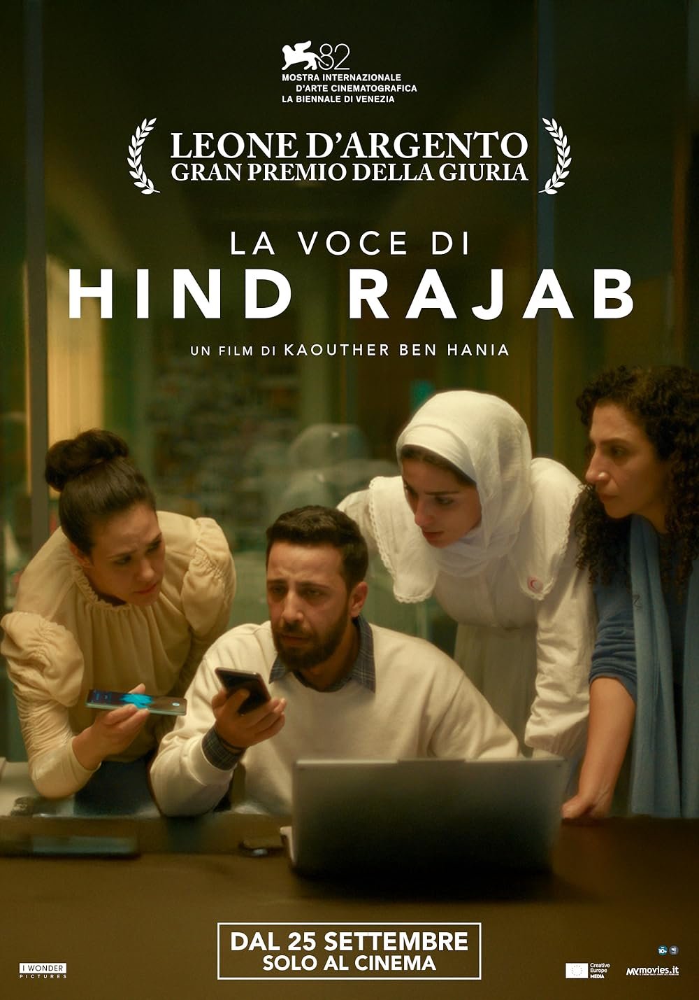

98th Annual Academy Awards
Melhor Filme Internacional
Conheça os candidatos à Premiação do Oscar 2026 por Melhor Filme Internacional.

Vencedor
Valor Sentimental
País: Noruega
Duração: 128 minutos
Diretor: Joachim Trier
Gênero: Drama / Comédia Melancólica
Enredo: Após a morte da mãe, duas irmãs precisam lidar com o reaparecimento do pai, um cineasta fracassado que quer que elas estreiem seu "projeto final". Um filme sobre como a arte pode ser usada para curar ou manipular feridas familiares.
Elenco Principal: Renate Reinsve, Stellan Skarsgård, Inga Ibsdotter Lilleaas.

O Agente Secreto
País: Brasil
Duração: 148 minutos
Diretor: Kleber Mendonça Filho
Gênero: Thriller Político / Drama
Enredo: Em 1977, um professor universitário (Moura) foge para o Recife tentando manter uma vida pacata enquanto é vigiado por agentes do estado. A obra explora o clima de paranoia, som em alta fidelidade e a tensão social do período.
Elenco Principal: Wagner Moura, Maria Fernanda Cândido

Foi Apenas um Acidente (C’était juste un accident)
País: França
Duração: 118 minutos
Diretor: Jafar Panahi
Gênero: Drama Psicológico / Suspense Jurídico
Enredo: Após um evento trágico em um jantar de alta classe, uma mulher é acusada de negligência fatal. O filme disseca a linha tênue entre o infortúnio e a intenção, expondo as hipocrisias da burguesia francesa.
Elenco Principal: Léa Seydoux, Swann Arlaud.

Sirât
País: Espanha
Duração: 125 minutos
Diretor: Oliver Laxe
Gênero: Drama Rural / Suspense
Enredo: Em uma pequena aldeia espanhola, uma mulher descobre segredos enterrados sobre a origem de sua propriedade durante uma seca extrema. O filme utiliza o cenário árido para criar um clima de tensão quase insuportável.
Elenco Principal: Penélope Cruz, Antonio de la Torre.

A Voz de Hind Rajab
País: Tunísia
Duração: 105 minutos
Diretor: Kaouther Ben Hania
Gênero: Drama Documental / Social
Enredo: Baseado em relatos reais e focado na urgência do testemunho, o filme narra a história de uma jovem em meio a um conflito devastador, utilizando a narrativa cinematográfica para garantir que as vozes silenciadas pela guerra sejam ouvidas mundialmente.
Elenco Principal: Elenco local e refugiados.